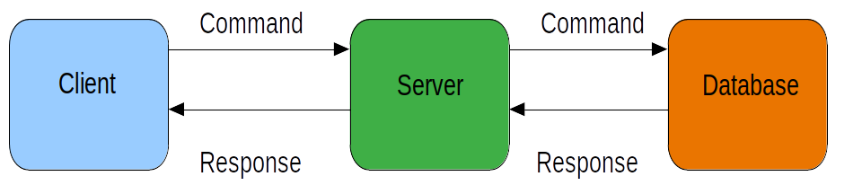

Book Store Project: Requirements and Architecture
By Christopher Williams
Date: 13/Jan/2023
Welcome to the start of a new Project! This is going to be part one out of five articles where we design and build a simple android app so we can develop a sense on making a project.
This first article though is going to be about the overall architecture for the project and some design considerations that comes with creating an app, so lucky for you, no coding today!
Requirements Gathering
So the first part of any project is ... having a project. It may sound kinda dumb but this part can easily be forgotten at times. Maybe, you really want to use this one piece of tech like a block chain and you build this completely novel program using block chains with the most finely crafted coding you have ever seen ... only to realize that it does not have an audience to use it.
So our first step is to have a problem and to learn about that problem. This is called "requirements gathering" and usually involves a client but it might not if you are planning to just sell the software to an audience. Either way, we need a definable problem that has some kind of metrics that we can use to judge if we have completed them. Now, it would be great for a client or our market audience to shout out everything with clarity "We want our app to run to sort through 5000 records, to locate duplicates and to return a specific return code under 5000ms" but that is as realistic as our client being a tax company that specializes in unicorn-dragons that live in retirement homes. Our client very likely does not know the limitations of computers or even what exactly what they need ... until you fail to provide it to them. They should have an inkling though and it is a part of our jobs to help guide the client to fully articulate what they want so we may turn "I want it to sort my records on my computers" to "I want a program on my main server to sort my records in descending order of priority that I can set, and to then send that list of records to another computer. This program will run at a reasonable rate of growth (so something below O(n^2) and is secure according to CERT standards". You can not always get metrics to be specific like a level of security but by setting reasonable constraints for ourselves ,we can design better made products and we will know when we have completed the project.
For this project we are going to have a client that has a book store with a type of loyalty program. What he wants is an application that can run reasonably well on the average Android phone that can tell his customer what they have ordered in the past, the status of any order and any prize redemptions that have customer has gotten from the points that they get from purchases. It does not contain any important information on the customer other than order information but it should be kept reasonably safe.
This short description is hiding a lot of background questions from the business side such as how will his customers react to having to download yet another app, is this worth the upkeep costs or would something else do a much better job like just having a website to handle this. Let's ignore those questions though because that is way out of scope for this set of articles and is more reserved to the true business side and instead focus on the requirements that matter to us.
First, let us break down this statement into more manageable chunks. We first know that multiple people are going to be using on different Android phones and each will have an account and need some way to login. We also know that the app needs a way of either storing the data for the customer on the phone or getting the data through a network dynamically. This data is going to be book orders or prizes that they have gotten. We also know that this application needs to "run well" which can usually be assumed in this instance as being fairly linear or close like O(nlogn) so the customers are not stuck waiting and becoming frustrasted. We also know that it needs some security, so not anything NSA level but something that can stop a script kiddy from getting the login information.
Architecture
Now that we have broken it down we can start the overall design for the project. When we chose technologies or design patterns we always need to be aware of strengths and weaknesses from the point of view for the client. We will be more specific with design when we get to implementing everything like what technology to use but for now we are going to be general.
The first step we should look for is there a simple way to do this without much work. The answer is yes and we can recommend to the client to use some kind of no code app creator such as AppyPie or AppMakr. The obvious strength for the client is that they can do it on their own very easily and it can do a lot of simple things that most clients want. It can also be cheaper upfront with some even being free. A big weaknesses though is that it is not tailor made for the client so the app may be very generic or the client wants something specific that the app maker can not do. Another is the cost over time where it might be cheaper to pay someone to build the app for a large upfront costs rather than the slow drain that occurs with app makers subscriptions. It is always a good idea to see if there is some pre-built solutions to use or something that can make our job much more simple so we do not waste each other’s time.
The next option is to custom make the application. The strength is of course we can tailor make it to whatever specifications. It could especially be useful if there is a lot systems that need to be put in place , so we the developer can more seamlessly integrate them together such as making a database. This does of course take much more work to do, which means more knowledge and more places for failures to take place, such as bad design or bad implementation.
Let's say for whatever reason the client decided to pick the second option. Now our job is to develop the general architecture for the project. The most obvious architecture pattern we can use is the client-server pattern.
This is a very simple architecture to understand and is a common solution that most apps use. Of course, like with any architecture pattern we can add to it to meet our needs and our architecture design will have three main parts, the client, the server and finally the database. The client is the end user's phone and it is here we will receive commands for the whole app like viewing orders or putting in login information. The database is the location that contains this information that the client needs like having the login information and the actual orders. Finally the server is what connects these two parts and does the business logic for the client. Let's look at an example.
In order to access the app, the user will need to enter their login information. The user will type it in a text box that is on the phone app, this is our client. The phone will then connect to a server and send over the login information to that server. This server will then reformat the information so the database can understand it and while it is reformatting the info, it can also check if the user is trying something fishy like trying to access other users information. The server will then send this reformatted information to the database and the database will respond accordingly like saying it found a match for both. The server will then send back its own response to the client like granting access to the next screen back to the user.
Some weaknesses to this design is that it requires a server and a database to use, so this means more things to secure, to maintain and to build. It also means that the system needs a network connection in order to work. This can be mitigated by caching the login information but this is a very minor issue so we can ignore it.
Some strengths is that by separating the client, the server and the database is that it is then easy to specialize and strengthen each part. The database can be made to efficiently search, store and update information. The client can be optimized for user comfort and also be lightweight for phones. The server can be made very secure while being very efficient in receiving commands from many clients at time. We can also update each part separately so for example if we update or change the database, we do not need to mess with the server or client side at all. By modulating each part to do its role efficiently and then integrating them together, we can create a system that is overall very efficient.
Next time, we will dive into the one of these parts for our program, the database.